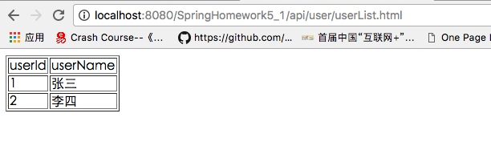
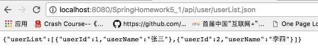

网易Java Web微专业Spring-Web框架单元作业
完成包含以下功能的Web工程，提供一个接口，该接口可以根据需要（扩展名，Accep头）返回一个HTML文档或者JSON数据，要求：
返回的JSON数据是一个用户列表，每个用户包含两个信息：用户Id（userId），用户名（userName），最终的数据类似：
{"userList" : [
{
"userId": 1001,
"userName": "test1"
},
{
"userId": 1002,
"userName": "test2"
}
...
]}
2. 返回的HTML文档基于FreeMarker生成，内容是一个用户列表的表格，对HTML表格不熟悉的同学可以参考 http://www.w3school.com.cn/tiy/t.asp?f=html_tables 了解；
3. 以自己能力为基础，返回的数据可以是接口内直接返回的，也可以是从数据库表里查询出来的（加分）；
4. 尽可能根据项目模板里介绍的内容组织代码及资源。
项目架构

相关概念
SpringMVC
SpringMVC是Spring自身提供的一套基于MVC设计理念的开发框架，用于替代安全性较低的Sturts框架
JSON
JSON(JavaScript Object Notation) 是一种轻量级的数据交换格式。它基于ECMAScript的一个子集。 JSON采用完全独立于语言的文本格式，但是也使用了类似于C语言家族的习惯（包括C、C++、C#、Java、JavaScript、Perl、Python等）。这些特性使JSON成为理想的数据交换语言。 易于人阅读和编写，同时也易于机器解析和生成(一般用于提升网络传输速率)。
视图解析器
控制器在选择好适合处理请求的方法时，传入收到的请求(根据方法参数类型，可能以不同的类型传入)，并且 调用该方法中的逻辑来进行处理(也可以是调用Service来真正处理)。方法逻辑可能也会在参数中添加或者删除数据。处理方法处理完之后，会委派给一个 视图，由该视图来处理方法的返回值。处理程序的返回值并不代表视图的具体实现，可以只是String类型，代表视图名，甚至是void(这时候 Spring MVC可以根据方法名或者控制器名找默认视图)。也不需要担心返回值只是视图名称的话，视图拿不到要显示的数据。因为方法参数对于视图来说也是可以拿到 的。比如说，如果处理方法以Map为参数，那么这个Map对于视图也是可以拿到的。
返回的视图名称会返回给DispatcherServlet，它会根据一个视图解析器将视图名称解析为一个具体的视图实现。这里说到的视图解析器是一个实现了ViewResolver借口的Bean，它的任务就是返回一个视图的具体实现(HTML、jsonp、json等等)。
内容协商视图解析器
可以根据请求的内容，自动匹配对应的视图解析器，对视图进行解析。
作业实现
我们按照模块图有下自上对本次作业实现进行说明。
User模型
package site.zhanjingbo.course.meta; public class User { private int userId; private String userName; public int getUserId() { return userId; } public void setUserId(int userId) { this.userId = userId; } public String getUserName() { return userName; } public void setUserName(String userName) { this.userName = userName; } }UserDao。User数据库访问接口
package site.zhanjingbo.course.dao; import java.util.List; import site.zhanjingbo.course.meta.User; public interface UserDao { public List<User> getUserList(); }UserDaoMapper。使用Mybatis对UserDao进行实现。
<?xml version="1.0" encoding="UTF-8" ?> <!DOCTYPE mapper PUBLIC "-//mybatis.org//DTD Mapper 3.0//EN" "http://mybatis.org/dtd/mybatis-3-mapper.dtd"> <mapper namespace="site.zhanjingbo.course.dao.UserDao"> <resultMap type="User" id="UserResult"> <result property="userId" column="userId" /> <result property="userName" column="userName" /> </resultMap> <select id="getUserList" resultMap="UserResult"> select * from user </select> </mapper>UserService。User的对应业务逻辑层
package site.zhanjingbo.course.service.impl; import java.util.List; import javax.annotation.Resource; import org.springframework.stereotype.Service; import site.zhanjingbo.course.dao.UserDao; import site.zhanjingbo.course.meta.User; import site.zhanjingbo.course.service.UserService; @Service public class UserServiceImpl implements UserService { @Resource private UserDao userDao; public List<User> getUserList() { return userDao.getUserList(); } }UserController。User的控制器层，调用业务逻辑，返回对应视图名称和数据。
package site.zhanjingbo.course.web.controller; import javax.annotation.Resource; import org.springframework.stereotype.Controller; import org.springframework.web.bind.annotation.RequestMapping; import org.springframework.web.servlet.ModelAndView; import site.zhanjingbo.course.service.UserService; @Controller @RequestMapping("/user") public class UserController { @Resource private UserService userService; @RequestMapping("/userList") public ModelAndView getUserList() { ModelAndView mav = new ModelAndView(); mav.setViewName("userList"); mav.addObject("userList", userService.getUserList()); return mav; } }userList.ftl。使用FreeMarker渲染的视图文件
<html> <head> <title>用户列表</title> </head> <body> <table border="1px"> <thead> <tr> <td>userId</td> <td>userName</td> </tr> </thead> <tbody> <#list userList as user> <tr> <td>${user.userId}</td> <td>${user.userName}</td> </tr> </#list> </tbody> </table> </body> </html>DispatcherServlet的配置文件，主要配置对应View的渲染方案，即内容协商视图响应。
<beans xmlns="http://www.springframework.org/schema/beans" xmlns:context="http://www.springframework.org/schema/context" xmlns:mvc="http://www.springframework.org/schema/mvc" xmlns:xsi="http://www.w3.org/2001/XMLSchema-instance" xsi:schemaLocation=" http://www.springframework.org/schema/beans http://www.springframework.org/schema/beans/spring-beans.xsd http://www.springframework.org/schema/context http://www.springframework.org/schema/context/spring-context.xsd http://www.springframework.org/schema/mvc http://www.springframework.org/schema/mvc/spring-mvc.xsd"> <context:component-scan base-package="site.zhanjingbo.course.web.controller" /> <bean id="contentNegotiationManager" class="org.springframework.web.accept.ContentNegotiationManagerFactoryBean"> <!-- 扩展名至mimeType的映射,即 /user.json => application/json --> <property name="favorPathExtension" value="true" /> <!-- 用于开启 /userinfo/123?format=json 的支持 --> <property name="favorParameter" value="true" /> <property name="parameterName" value="format" /> <!-- 是否忽略Accept Header --> <property name="ignoreAcceptHeader" value="false" /> <property name="mediaTypes"> <map> <entry key="json" value="application/json" /> <entry key="xml" value="application/xml" /> </map> </property> <!-- 默认的content type --> <property name="defaultContentType" value="text/html" /> </bean> <!-- freeMarker --> <bean id="freemarkerConfig" class="org.springframework.web.servlet.view.freemarker.FreeMarkerConfigurer"> <property name="templateLoaderPath" value="/freemarker/" /> </bean> <bean class="org.springframework.web.servlet.view.ContentNegotiatingViewResolver"> <property name="contentNegotiationManager" ref="contentNegotiationManager" /> <property name="viewResolvers"> <list> <bean id="viewResolver" class="org.springframework.web.servlet.view.freemarker.FreeMarkerViewResolver"> <property name="cache" value="true" /> <property name="prefix" value="" /> <property name="suffix" value=".ftl" /> <property name="contentType" value="text/html; charset=utf-8" /> </bean> </list> </property> <property name="defaultViews"> <list> <!-- JSON --> <bean class="org.springframework.web.servlet.view.json.MappingJackson2JsonView" /> <!-- XML --> <bean class="org.springframework.web.servlet.view.xml.MarshallingView"> <property name="marshaller"> <bean class="org.springframework.oxm.xstream.XStreamMarshaller" /> </property> </bean> </list> </property> </bean> </beans>
结果展示
为了更好的展示不同URL后缀以及不同Accept头对应的不同返回结果，我们使用curl命令对项目进行请求，观察返回结果。
无后缀，默认URL
curl http://localhost:8080/SpringHomework5_1/api/user/userList
html后缀
http://localhost:8080/SpringHomework5_1/api/user/userList.html
JSON后缀
http://localhost:8080/SpringHomework5_1/api/user/userList.json
XML后缀
curl http://localhost:8080/SpringHomework5_1/api/user/userList.xml
JSON头
curl -H 'Accept:application/json' http://localhost:8080/SpringHomework5_1/api/user/userList
XML头
curl -H 'Accept:application/xml' http://localhost:8080/SpringHomework5_1/api/user/userList
总结
虽然完成了目标任务，但是对于Spring整合其它框架以及SpringMVC的相关功能的具体熟悉还需要进一步学习。
代码


Copyright © 2016 swuzjb